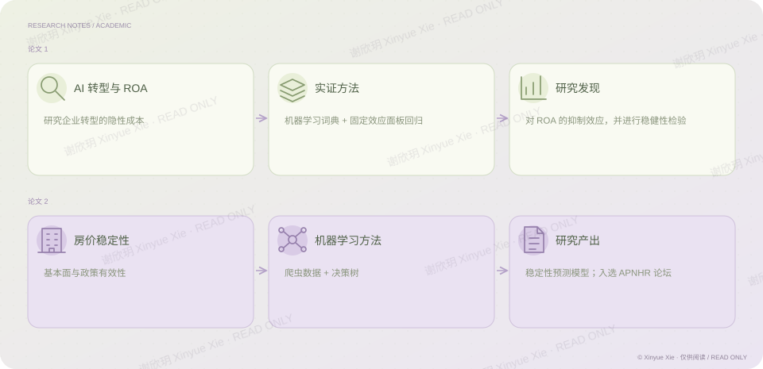

学术研究 · 实证与机器学习
用证据回应真实世界的问题
AI 转型的隐性成本与房价稳定性
PROJECT NOTES / THE BIG PICTURE
问题、方法与发现

01人工智能转型的隐性成本
经管实证论文：《人工智能转型的隐性成本——对企业资产回报率（ROA）的抑制效应的实证研究》。使用固定效应面板回归，基于机器学习构建词典，发现 AI 对 ROA 存在抑制作用且稳健。
02房价稳定性与政策有效性
机器学习论文：《房价稳定性影响因素决策树模型：基于基本面和政策有效性的双重实证》。基于爬虫数据及决策树等机器学习模型，构建房价稳定性预测模型推动精准施策，入选 APNHR 论坛。
相关经历科研与实证研究
谢欣玥 Xinyue Xie · 研究作品仅供在线阅读
← 返回全部作品